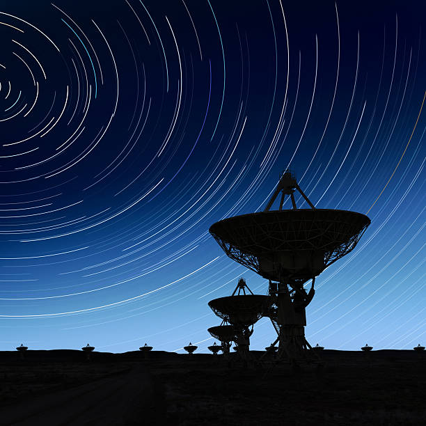
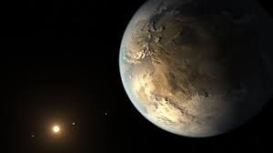

1. What is Astrobiology?
Astrobiology is an interdisciplinary field that deals with the origins, evolution, and search for life throughout the cosmos.
It combines areas of Astronomy, Chemistry, Geology, Physics, and Biology to advance knowledge regarding Earth's place in the universe.
2. Challenges In Astrobiology

- Distance: The sheer distance between Earth and other stars makes tracing life difficult, as well as avoiding false positives.
- Origins: The process of abiogenesis (See panel 4) is still largely unknown, causing uncertainty in conditions for life to exist.
- Ethics: Discovering extraterrestrial life would change our perspectives of life in its entirety. Strict protocols would need to be introduced.
- Sample Size: Currently, only one example of planetary life (Earth's) exists, so it is difficult to gauge the potential of life elsewhere.
- Funding: Astrobiology is more of a niche field, involving the work of several disciplines. It is difficult to secure funding/grants for research.
- Communication: The highly abstract nature of Astrobiology and the depiction of aliens
throughout culture can easily lead to misunderstandings, and sensationalism within the media. This can damage the
legitimacy and reputation of the field entirely.
(See "Biases" tab)
Panel 3
Short content for the second panel. Maybe more detailed text could go here later.
4. Astrobiology Glossary (Expand)
This module contains some key vocabulary used in Astrobiology.
Panel 5

This content is more lengthy and can go on a bit longer. The goal is to check how different amounts of content interact with the layout.